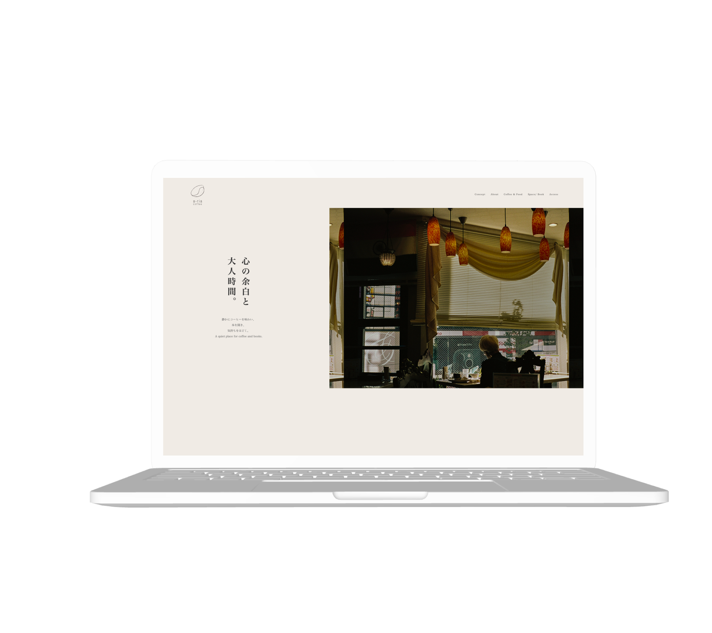

Web Design / LP
WORKS
Cafe Site “a-rea coffee”
Direction / Design / Coding
ゆったりとした時間と空間の心地よさが伝わるよう制作した、カフェサイトのデザインです。

概要
日常から少し離れ、ゆったりとした時間を過ごせるカフェサイトとして、「心がほどける大人時間」をコンセプトに制作しました。 情報を詰め込みすぎず、余白とビジュアルを活かすことで、空間の心地よさや静けさが伝わる構成を目指しました。
目的
カフェの世界観や空間の魅力を視覚的に伝え、訪問前から過ごす時間を想起させることで、来店意欲につながるサイトを目指しました。
ターゲット
落ち着いた空間でゆっくり過ごしたい、読書や作業など一人の時間を大切にしたい20〜40代の男女を想定しています。
課題
メニューやアクセス情報だけでは他店との差別化が難しく、来店動機につながりにくいと考えました。 そのため「どんな時間が過ごせるのか」が伝わる見せ方を重視しました。
デザイン
落ち着きと上質さを表現するため、ベージュやブラウンを基調とした配色で統一しました。 余白を大きく取り、静けさや心地よさを感じられるレイアウトにしています。
写真のトーンを揃えることでサイト全体に一貫した世界観を持たせました。
制作範囲
使用ツール
Figma / Illustrator / VS Code
Yumi Goto